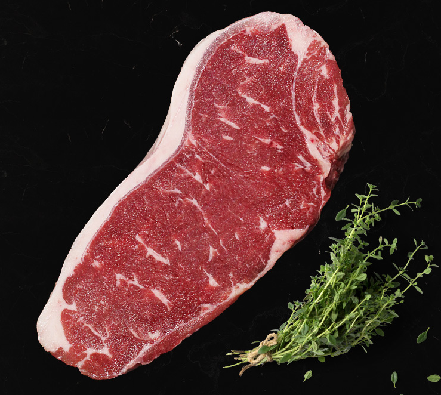
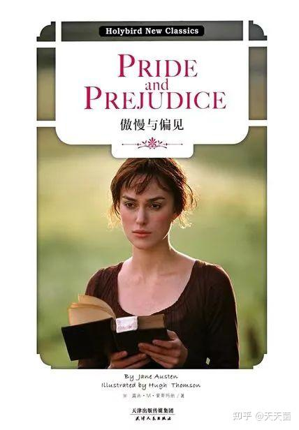
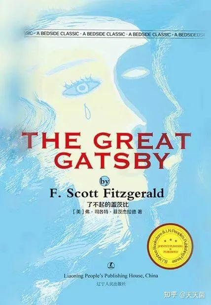
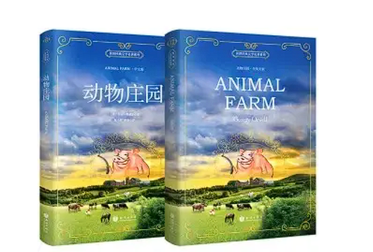

My favourite restaurant
In the Texasroad House, we can have Hand-Cut Steaks, Fall-Off-The-Bone Ribs, Made-From-Scratch Sides, Ice-Cold Beer, and of course, our irresistible Fresh-Baked Bread
visit the Texasroad HouseMy favourite food picture
 Ribeye. For the ultimate juicy, beefy flavor, a ribeye is a great choice. These ultra-flavorful steaks are essentially individually cut prime rib roasts.| harry potter | Pride and Prejudice | The Great Gatsby | Animal Farm | |
|---|---|---|---|---|
| name | "harry potter and XXX"series | Pride and Prejudice | The Great Gatsby | Animal Farm |
| images |  |
 |  |  |
| author | J.K. Rowling | Jane Austen | Scott Fitzgerald | George Orwell |
| summary of the book | The main story arc concerns Harry's conflict with Lord Voldemort, a dark wizard who intends to become immortal, overthrow the wizard governing body known as the Ministry of Magic, and subjugate all wizards and Muggles | Pride and Prejudice follows the turbulent relationship between Elizabeth Bennet, the daughter of a country gentleman, and Fitzwilliam Darcy, a rich aristocratic landowner. They must overcome the titular sins of pride and prejudice in order to fall in love and marry. | The Great Gatsby is an American classic following Jay Gatsby's quest to win back his long-lost love by faking a successful life, depicting the struggles around love, relationships, societal standing, and consumerism of people in the “roaring” 1920s. | It tells the story of a group of anthropomorphic farm animals who rebel against their human farmer, hoping to create a society where the animals can be equal, free, and happy. |